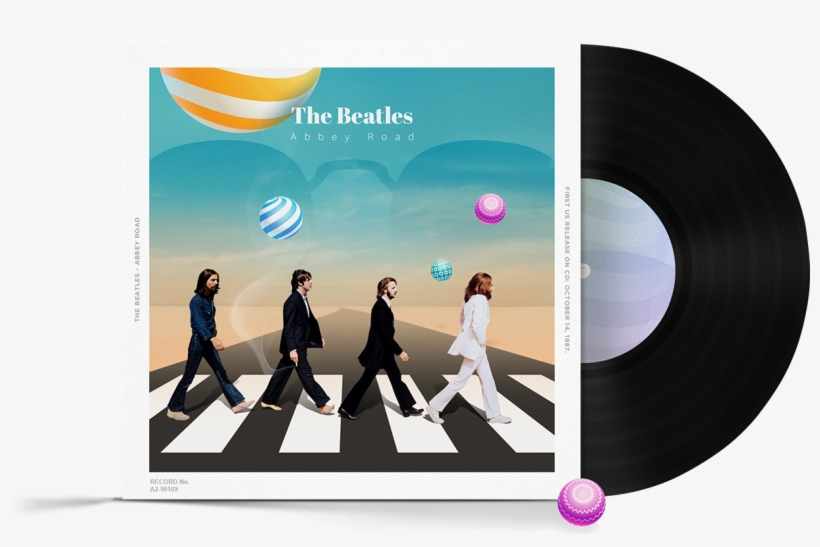
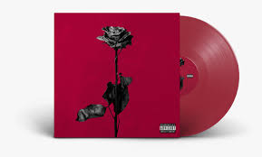
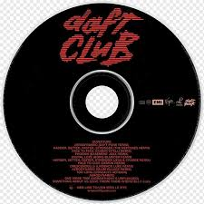
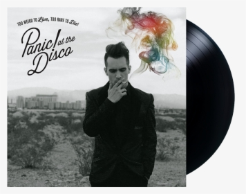

We provide our customers a premium service to buy different type of vinyl records from various types of geners and of different Artists! Disc record or record, is an analog sound storage medium in the form of a flat disc with an inscribed, modulated spiral groove. The groove usually starts near the periphery and ends near the center of the disc. At first, the discs were commonly made from shellac, with earlier records having a fine abrasive filler mixed in. Starting in the 1940s polyvinyl chloride became common, hence the name "vinyl". In the mid-2000s, gradually, records made of any material began to be called vinyl disc records, also known as vinyl records or vinyl for short.
1.Rome Storms

2.The Beatles
3.Black Bear
4.Daft Punk
5.Panic in disco
